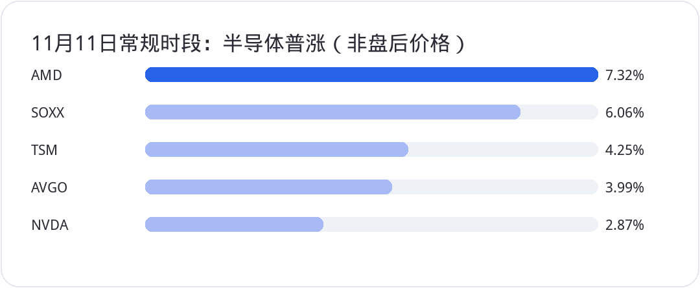

<div style="margin:0;padding:0;background:#f5f7fa;color:#2a2a34;font-size:16px;line-height:1.9;font-family:-apple-system,BlinkMacSystemFont,'SF Pro Text','PingFang SC','Hiragino Sans GB','Microsoft YaHei',Arial,sans-serif;font-variant-numeric:tabular-nums;font-feature-settings:'tnum' 1,'lnum' 1;text-align:left !important;text-align-last:left;letter-spacing:0;word-spacing:normal;white-space:normal;word-break:normal;box-sizing:border-box;"><div style="margin:0;background:#ffffff;padding:28px 22px 44px 22px;box-sizing:border-box;text-align:left !important;text-align-last:left;letter-spacing:0;word-spacing:normal;white-space:normal;word-break:normal;"><p style="display:block;width:100%;margin:0 0 12px 0;padding:0;color:#2763e9;font-size:10px;line-height:1.6;font-weight:650;letter-spacing:0.12em;text-align:center !important;text-align-last:center;word-spacing:normal;white-space:normal;word-break:normal;box-sizing:border-box;">美股 · 期权 · 资讯 · 观点</p><div style="margin:0 0 30px 0;padding:0;text-align:center !important;text-align-last:center;word-spacing:normal;white-space:normal;word-break:normal;box-sizing:border-box;"></div><div style="margin:0 0 0 0;padding:28px 0 0 0;text-align:left !important;text-align-last:left;letter-spacing:0;word-spacing:normal;white-space:normal;word-break:normal;box-sizing:border-box;"><div style="margin:0 0 12px 0;padding:0;text-align:left !important;line-height:1.2;border:0;display:flex;align-items:center;gap:10px;text-align-last:left;letter-spacing:0;word-spacing:normal;white-space:normal;word-break:normal;box-sizing:border-box;"><span style="display:inline-block;flex:0 0 auto;vertical-align:middle;color:#2763e9;font-size:12px;font-weight:850;letter-spacing:0.12em;line-height:1.2;text-transform:uppercase;border:0;box-sizing:border-box;">0 · MOMENTUM</span><span style="display:block;flex:1 1 auto;min-width:36px;vertical-align:middle;height:1px;margin:0 0 2px 0;background:#2763e9;line-height:1px;font-size:0;border:0;box-sizing:border-box;"></span></div><p style="margin:0 0 16px 0;padding:0;color:#2a2a34;font-size:22px;line-height:1.45;font-weight:850;text-align:left !important;letter-spacing:0;text-align-last:left;word-spacing:normal;white-space:normal;word-break:normal;box-sizing:border-box;">日内反弹很强，盘后才是今天的风险考题</p><p style="margin:0 0 16px 0;padding:0;color:#454550;font-size:16px;line-height:1.9;font-weight:400;text-align:left !important;letter-spacing:0;word-spacing:normal;white-space:normal;word-break:normal;text-align-last:left;box-sizing:border-box;">美股11月11日交易时段收得不错。标普500上涨1.31%至7619.38点，纳斯达克综合指数涨1.60%至25466.19点，道指涨0.49%至52486.49点。<strong style="color:#2a2a34;font-weight:700;box-sizing:border-box;">QQQ</strong>上涨2.32%至690.38美元，<strong style="color:#2a2a34;font-weight:700;box-sizing:border-box;">SPY</strong>上涨约1.32%至759.81美元。半导体表现更强：<strong style="color:#2a2a34;font-weight:700;box-sizing:border-box;">SOXX</strong>上涨约6.06%，收于155.47美元；<strong style="color:#2a2a34;font-weight:700;box-sizing:border-box;">AMD</strong>上涨7.32%至552.90美元，<strong style="color:#2a2a34;font-weight:700;box-sizing:border-box;">TSM</strong>涨4.25%至413.35美元，<strong style="color:#2a2a34;font-weight:700;box-sizing:border-box;">AVGO</strong>涨3.99%至345.22美元。<strong style="color:#2a2a34;font-weight:700;box-sizing:border-box;">NVDA</strong>常规交易时段也上涨2.87%，收在173.73美元。</p><p style="margin:4px 0 16px 0;padding:0;text-align:center !important;text-align-last:center;word-spacing:normal;white-space:normal;word-break:normal;box-sizing:border-box;"></p><p style="margin:0 0 16px 0;padding:0;color:#454550;font-size:16px;line-height:1.9;font-weight:400;text-align:left !important;letter-spacing:0;word-spacing:normal;white-space:normal;word-break:normal;text-align-last:left;box-sizing:border-box;">问题发生在美东收盘以后。《华尔街日报》11月11日报道，英伟达董事会正在准备考虑黄仁勋的CEO去留，相关会议可能很快举行。消息发酵后，<strong style="color:#2a2a34;font-weight:700;box-sizing:border-box;">NVDA</strong>在盘后曾下跌约7%至8%，一份美东晚上7时15分左右的报价约160.50美元，纳斯达克100期货也随之走弱。这是盘后报价和媒体报道，不是11月11日常规收盘价，更不是已经公布的董事会罢免决议。将二者混写，技术图表与风险评估就会从第一步开始出错。</p><p style="margin:0 0 16px 0;padding:0;color:#454550;font-size:16px;line-height:1.9;font-weight:400;text-align:left !important;letter-spacing:0;word-spacing:normal;white-space:normal;word-break:normal;text-align-last:left;box-sizing:border-box;">从7619点的标普收盘看，前期暴跌后的修复确实推进了一步；从英伟达盘后交易看，AI龙头的公司特有风险还在加速积累。后市最重要的分歧，已从“AI需求有没有”转向“管理层稳定性能否继续支撑这份需求和估值”。</p></div><div style="margin:30px 0 0 0;padding:28px 0 0 0;text-align:left !important;text-align-last:left;letter-spacing:0;word-spacing:normal;white-space:normal;word-break:normal;box-sizing:border-box;"><div style="margin:0 0 12px 0;padding:0;text-align:left !important;line-height:1.2;border:0;display:flex;align-items:center;gap:10px;text-align-last:left;letter-spacing:0;word-spacing:normal;white-space:normal;word-break:normal;box-sizing:border-box;"><span style="display:inline-block;flex:0 0 auto;vertical-align:middle;color:#2763e9;font-size:12px;font-weight:850;letter-spacing:0.12em;line-height:1.2;text-transform:uppercase;border:0;box-sizing:border-box;">1 · FOCUS</span><span style="display:block;flex:1 1 auto;min-width:36px;vertical-align:middle;height:1px;margin:0 0 2px 0;background:#2763e9;line-height:1px;font-size:0;border:0;box-sizing:border-box;"></span></div><p style="margin:0 0 16px 0;padding:0;color:#2a2a34;font-size:22px;line-height:1.45;font-weight:850;text-align:left !important;letter-spacing:0;text-align-last:left;word-spacing:normal;white-space:normal;word-break:normal;box-sizing:border-box;">董事会传闻确实有报道，但正式决定尚未出现</p><p style="margin:0 0 16px 0;padding:0;color:#454550;font-size:16px;line-height:1.9;font-weight:400;text-align:left !important;letter-spacing:0;word-spacing:normal;white-space:normal;word-break:normal;text-align-last:left;box-sizing:border-box;">目前可以确认的事实有两层。11月8日，英伟达董事会正式成立由独立董事和外部律师协助的调查，审查CEO黄仁勋是否受到外国情报活动针对。董事会声明同时说，没有理由相信国家安全或公司机密已经受损，并公开支持黄仁勋及其领导团队。11月10日，独立董事进一步公布由前联邦检察官Joon H. Kim及Wachtell律师事务所负责调查，但并未宣布换帅。11月11日，《华尔街日报》又引述知情人士称董事会正考虑他的未来；路透社转述报道时明确说未能独立核实，英伟达当时也未回应置评请求。</p><p style="margin:0 0 16px 0;padding:0;color:#454550;font-size:16px;line-height:1.9;font-weight:400;text-align:left !important;letter-spacing:0;word-spacing:normal;white-space:normal;word-break:normal;text-align-last:left;box-sizing:border-box;">所以，<strong style="color:#2a2a34;font-weight:700;box-sizing:border-box;">调查已经启动</strong>和<strong style="color:#2a2a34;font-weight:700;box-sizing:border-box;">董事会决定罢免</strong>不是同一回事。私人关系中的不忠有本人公开承认的部分；涉及情报机构、技术泄露、违法行为的更严重说法仍是报道或待调查事项，不能因为盘后股价下跌便自动视为已证实。即使董事会具备更换CEO的公司治理权力，最终也要看正式通知、董事会程序和继任安排。</p><p style="margin:0 0 16px 0;padding:0;color:#454550;font-size:16px;line-height:1.9;font-weight:400;text-align:left !important;letter-spacing:0;word-spacing:normal;white-space:normal;word-break:normal;text-align-last:left;box-sizing:border-box;">为什么这个区别对股票价格这么重要？因为关键人物风险本质上是一个对未来现金流与执行能力的不确定性折价。如果传闻被否定、黄仁勋继续留任且调查未发现公司业务违规，一部分治理折价有机会收窄。若董事会正式宣布换帅，却同时公布有经验的内部接班人和明确过渡方案，冲击可能更偏向短期风险溢价。若调查揭示涉及出口合规、客户交易或商业机密的重大问题，折价才可能进一步传导到订单、利润与监管成本。三种情景需要不同仓位规划，不能拿同一条八卦标题全部概括。</p></div><div style="margin:30px 0 0 0;padding:28px 0 0 0;text-align:left !important;text-align-last:left;letter-spacing:0;word-spacing:normal;white-space:normal;word-break:normal;box-sizing:border-box;"><div style="margin:0 0 12px 0;padding:0;text-align:left !important;line-height:1.2;border:0;display:flex;align-items:center;gap:10px;text-align-last:left;letter-spacing:0;word-spacing:normal;white-space:normal;word-break:normal;box-sizing:border-box;"><span style="display:inline-block;flex:0 0 auto;vertical-align:middle;color:#2763e9;font-size:12px;font-weight:850;letter-spacing:0.12em;line-height:1.2;text-transform:uppercase;border:0;box-sizing:border-box;">2 · RISK</span><span style="display:block;flex:1 1 auto;min-width:36px;vertical-align:middle;height:1px;margin:0 0 2px 0;background:#2763e9;line-height:1px;font-size:0;border:0;box-sizing:border-box;"></span></div><p style="margin:0 0 16px 0;padding:0;color:#2a2a34;font-size:22px;line-height:1.45;font-weight:850;text-align:left !important;letter-spacing:0;text-align-last:left;word-spacing:normal;white-space:normal;word-break:normal;box-sizing:border-box;">黄仁勋重要到什么程度？产品路线图与关键人物风险分开看</p><p style="margin:0 0 16px 0;padding:0;color:#454550;font-size:16px;line-height:1.9;font-weight:400;text-align:left !important;letter-spacing:0;word-spacing:normal;white-space:normal;word-break:normal;text-align-last:left;box-sizing:border-box;">黄仁勋对英伟达的价值，不只是创始人头衔。他长期主导CUDA软件生态、AI加速计算的软硬件协同，以及与云服务商和各国政府的高层合作。把一个企业级算力平台从芯片卖到开发工具、网络互连和完整机柜，需要跨多个产品周期兑现战略。领导者更替会给客户沟通、产品决策节奏和人才稳定带来新变量。</p><p style="margin:0 0 16px 0;padding:0;color:#454550;font-size:16px;line-height:1.9;font-weight:400;text-align:left !important;letter-spacing:0;word-spacing:normal;white-space:normal;word-break:normal;text-align-last:left;box-sizing:border-box;">但不能从此跳到“离任后CUDA立刻失去护城河”。已经开发的Blackwell平台、Rubin产品计划、软件工具链、客户部署和数以万计员工的执行能力，不会随着一个人的离职一夜归零。已有硬件订单也不可能凭一条新闻立刻全部取消。更现实的风险，是未来几年大型技术路线取舍、下一轮平台投资、监管谈判和长期客户承诺有没有新的稳定决策中心。</p><p style="margin:0 0 16px 0;padding:0;color:#454550;font-size:16px;line-height:1.9;font-weight:400;text-align:left !important;letter-spacing:0;word-spacing:normal;white-space:normal;word-break:normal;text-align-last:left;box-sizing:border-box;">所谓“2028年后必然沦为普通硬件公司”是对关键人物作用的一种极端推演，不是可验证的财务预测。即使没有黄仁勋，管理团队也可能维持或重新组织竞争优势；反过来，即使他留任，<strong style="color:#2a2a34;font-weight:700;box-sizing:border-box;">AMD</strong>、<strong style="color:#2a2a34;font-weight:700;box-sizing:border-box;">AVGO</strong>和云厂商自研ASIC的竞争压力也不会消失。投资价值取决于持续的产品性能、软件迁移成本、客户经济性、研发执行与自由现金流，而不是把某一位CEO当成永远不会变化的资产。</p><p style="margin:0 0 16px 0;padding:0;color:#454550;font-size:16px;line-height:1.9;font-weight:400;text-align:left !important;letter-spacing:0;word-spacing:normal;white-space:normal;word-break:normal;text-align-last:left;box-sizing:border-box;">公司已正式安排11月17日美东下午4时20分左右发布2027财年第三季度业绩，下午5时召开电话会。到时看数据中心收入、毛利率、下一季度指引和订单兑现，比提前断言财报一定推动反弹更可靠。治理调查未必会在财报前结束，强劲业绩也不等于能自动消除诉讼或合规风险。</p></div><div style="margin:30px 0 0 0;padding:28px 0 0 0;text-align:left !important;text-align-last:left;letter-spacing:0;word-spacing:normal;white-space:normal;word-break:normal;box-sizing:border-box;"><div style="margin:0 0 12px 0;padding:0;text-align:left !important;line-height:1.2;border:0;display:flex;align-items:center;gap:10px;text-align-last:left;letter-spacing:0;word-spacing:normal;white-space:normal;word-break:normal;box-sizing:border-box;"><span style="display:inline-block;flex:0 0 auto;vertical-align:middle;color:#2763e9;font-size:12px;font-weight:850;letter-spacing:0.12em;line-height:1.2;text-transform:uppercase;border:0;box-sizing:border-box;">3 · MEGACAP</span><span style="display:block;flex:1 1 auto;min-width:36px;vertical-align:middle;height:1px;margin:0 0 2px 0;background:#2763e9;line-height:1px;font-size:0;border:0;box-sizing:border-box;"></span></div><p style="margin:0 0 16px 0;padding:0;color:#2a2a34;font-size:22px;line-height:1.45;font-weight:850;text-align:left !important;letter-spacing:0;text-align-last:left;word-spacing:normal;white-space:normal;word-break:normal;box-sizing:border-box;">对NVDA、AMD、AVGO的真正影响，先看订单而不是股价翘翘板</p><p style="margin:0 0 16px 0;padding:0;color:#454550;font-size:16px;line-height:1.9;font-weight:400;text-align:left !important;letter-spacing:0;word-spacing:normal;white-space:normal;word-break:normal;text-align-last:left;box-sizing:border-box;">对<strong style="color:#2a2a34;font-weight:700;box-sizing:border-box;">NVDA</strong>而言，11月11日常规时段最低170.77美元、收盘173.73美元，盘后约160美元的报价说明新的消息风险可能把此前174美元一带的技术框架打乱。150至160美元是后续观察区域，不是必然止跌的保险线；194美元可以作为强势恢复时的更高确认位。首要任务是弄清董事会正式文件是否公布，以及下一次常规开盘后成交量、价格能否稳定，而不是单纯把盘后低价当成抄底信号。</p><p style="margin:0 0 16px 0;padding:0;color:#454550;font-size:16px;line-height:1.9;font-weight:400;text-align:left !important;letter-spacing:0;word-spacing:normal;white-space:normal;word-break:normal;text-align-last:left;box-sizing:border-box;">如果原先的交易纪律是“官方正式宣布黄仁勋离任才清仓”，那就不能仅凭传闻视为条件已触发。另一个策略是等11月17日财报、11月18日开盘才处理仓位，这属于主动承受财报跳空与隔夜消息的选择，并不保证可以卖得更高。尤其在正式换帅、监管消息与财报都可能集中出现时，持有隔夜风险与持仓成本低没有逻辑上的必然关系。“剩下都是利润”也不意味着亏掉这部分资金就没有经济损失。</p><p style="margin:0 0 16px 0;padding:0;color:#454550;font-size:16px;line-height:1.9;font-weight:400;text-align:left !important;letter-spacing:0;word-spacing:normal;white-space:normal;word-break:normal;text-align-last:left;box-sizing:border-box;">竞争对手短期的股价弹性确实更高：<strong style="color:#2a2a34;font-weight:700;box-sizing:border-box;">AMD</strong>当日收在552.90美元，已经越过此前501至528美元观察区；<strong style="color:#2a2a34;font-weight:700;box-sizing:border-box;">AVGO</strong>收在345.22美元，仍低于365美元的更高趋势参考价。市场可能提前为客户分散供应商的预期付钱，但订单份额转移要经历产品认证、软件适配、供应能力、价格谈判与实际交付。客户对Blackwell和CUDA的路径依赖，决定了“英伟达管理层遇险”不等于“AMD下季度收入自动接盘”。Broadcom的定制ASIC同样不是所有训练和推理负载的即插即用替代品。</p><p style="margin:0 0 16px 0;padding:0;color:#454550;font-size:16px;line-height:1.9;font-weight:400;text-align:left !important;letter-spacing:0;word-spacing:normal;white-space:normal;word-break:normal;text-align-last:left;box-sizing:border-box;">下一步更有用的验证清单，是云厂商是否公开改变采购组合、<strong style="color:#2a2a34;font-weight:700;box-sizing:border-box;">AMD</strong>与<strong style="color:#2a2a34;font-weight:700;box-sizing:border-box;">AVGO</strong>是否上修实际出货指引、英伟达是否调整产品上市节奏，以及价格反弹有没有盈利预测跟进。若黄仁勋继续留任，竞争股前期获得的部分避险溢价也可能被回吐；若正式换帅，仍要区分短期情绪交易与有证据的长期份额迁移。</p></div><div style="margin:30px 0 0 0;padding:28px 0 0 0;text-align:left !important;text-align-last:left;letter-spacing:0;word-spacing:normal;white-space:normal;word-break:normal;box-sizing:border-box;"><div style="margin:0 0 12px 0;padding:0;text-align:left !important;line-height:1.2;border:0;display:flex;align-items:center;gap:10px;text-align-last:left;letter-spacing:0;word-spacing:normal;white-space:normal;word-break:normal;box-sizing:border-box;"><span style="display:inline-block;flex:0 0 auto;vertical-align:middle;color:#2763e9;font-size:12px;font-weight:850;letter-spacing:0.12em;line-height:1.2;text-transform:uppercase;border:0;box-sizing:border-box;">4 · MOMENTUM</span><span style="display:block;flex:1 1 auto;min-width:36px;vertical-align:middle;height:1px;margin:0 0 2px 0;background:#2763e9;line-height:1px;font-size:0;border:0;box-sizing:border-box;"></span></div><p style="margin:0 0 16px 0;padding:0;color:#2a2a34;font-size:22px;line-height:1.45;font-weight:850;text-align:left !important;letter-spacing:0;text-align-last:left;word-spacing:normal;white-space:normal;word-break:normal;box-sizing:border-box;">SPY、QQQ、SOXX走到阻力区，反弹不等于趋势确认</p><p style="margin:0 0 16px 0;padding:0;color:#454550;font-size:16px;line-height:1.9;font-weight:400;text-align:left !important;letter-spacing:0;word-spacing:normal;white-space:normal;word-break:normal;text-align-last:left;box-sizing:border-box;"><strong style="color:#2a2a34;font-weight:700;box-sizing:border-box;">SPY</strong>周三收于759.81美元，已来到759至776美元的上方供给观察带。若向上反复测试并站稳776美元，才更接近打破震荡、重新评估年底更强行情的条件；若在该区受阻并回落，前期低点到当前的快速反弹就仍可能只是修复行情。量化CTA模型曾把标普500指数7676点作为潜在买盘加速触发位，但模型要随着波动率和持仓变化更新，不能把所谓数百亿美元买单当成已确定成交订单。</p><p style="margin:0 0 16px 0;padding:0;color:#454550;font-size:16px;line-height:1.9;font-weight:400;text-align:left !important;letter-spacing:0;word-spacing:normal;white-space:normal;word-break:normal;text-align-last:left;box-sizing:border-box;"><strong style="color:#2a2a34;font-weight:700;box-sizing:border-box;">QQQ</strong>收于690.38美元，距离703美元的较高反转参考位不远；上方需要观察有效突破后的回踩能否守住，避免用盘中触及代替趋势确立。<strong style="color:#2a2a34;font-weight:700;box-sizing:border-box;">SOXX</strong>收于155.47美元，靠近160美元及更高的178美元观察阻力区。基金已在11月5日完成1拆3的份额调整，技术点位必须统一拆股后口径。今天半导体常规时段的6%涨幅是真实市场表现，但在英伟达盘后突发下跌后，不能把交易时段与盘后情绪混成一个“全面看多”信号。</p><p style="margin:0 0 16px 0;padding:0;color:#454550;font-size:16px;line-height:1.9;font-weight:400;text-align:left !important;letter-spacing:0;word-spacing:normal;white-space:normal;word-break:normal;text-align-last:left;box-sizing:border-box;">当前更稳妥的做法是分两层决策：指数层面，观察标普能否持续站稳7676、<strong style="color:#2a2a34;font-weight:700;box-sizing:border-box;">QQQ</strong>能否突破703；个股层面，等<strong style="color:#2a2a34;font-weight:700;box-sizing:border-box;">NVDA</strong>管理层消息和11月17日财报给出新证据。积极情景是传闻澄清、业务指引稳定、半导体多数股票维持强势；中性情景是调查持续、英伟达波动放大但客户订单正常；偏空情景是重大治理或合规问题坐实，云厂商重新评估采购，行业整体风险偏好再次收缩。</p><p style="margin:0 0 16px 0;padding:0;color:#454550;font-size:16px;line-height:1.9;font-weight:400;text-align:left !important;letter-spacing:0;word-spacing:normal;white-space:normal;word-break:normal;text-align-last:left;box-sizing:border-box;">对持有较大科技股仓位、或有卖出看跌期权接仓义务的账户，要把隔夜跳空、集中度和可用现金放在第一位。保护性看跌期权与领口可以转移一部分尾部风险，但要比较保费和上行封顶。<strong style="color:#2a2a34;font-weight:700;box-sizing:border-box;">新闻标题可以瞬间改变股价，真正决定长期股东收益的仍是产品、客户、现金流与管理层持续执行的能力。</strong></p></div><div style="margin:34px 0 0 0;padding:0;border:1px solid #e4e7ed;border-radius:24px;background:#fafbfc;text-align:center !important;box-sizing:border-box;overflow:hidden;text-align-last:center;word-spacing:normal;white-space:normal;word-break:normal;"><p style="margin:0;padding:18px 16px;color:#6a6a78;font-size:14px;line-height:1.8;text-align:center !important;background:#fafbfc;box-sizing:border-box;text-align-last:center;word-spacing:normal;white-space:normal;word-break:normal;">长按识别二维码关注公众号，持续获取每日美股资讯与观点。</p><p style="margin:0;text-align:center !important;background:#ffffff;box-sizing:border-box;text-align-last:center;word-spacing:normal;white-space:normal;word-break:normal;"></p></div><p style="margin:28px 0 0 0;padding:22px 0 0 0;color:#9a9aa8;font-size:12px;line-height:1.8;text-align:center !important;text-align-last:center;word-spacing:normal;white-space:normal;word-break:normal;box-sizing:border-box;">免责声明：本文仅为个人市场观察和交易复盘，不构成任何投资建议；市场有风险，交易需谨慎。点击阅读原文可跳转博客。</p></div></div>
